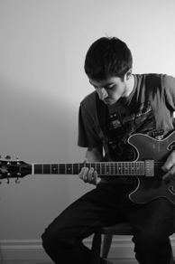

Biography:
I attended Villanova University from 2007 - 2011 and studied Media Production and Computer Science. Throughout my Villanova Career I took advantage of any and all opportunities to expand my knowledge and experience with the production of multimedia. During the Spring of 2010 I was an intern at the Vatican in Rome. I worked on several projects for the vatican including online 360 degree virtual tours of St. Peter's Basilica and St. Mary Major in Rome. While at Villanova I also worked on two short documentaries dealing with social constructs in the Philadelphia neighborhoods. These documentaries have gone on to be featured in film festivals and also used as educational tools for schools and organizations.
After graduating from Villanova I began working as a Broadcast Associate for CBS Sports Network. I have produced and edited various types of video pieces to be used on Studio shows. I have also continued working on freelance projects in other disciplines.
I am also a member of the band Wild Monica, which formed during my time at Villanova and has continued to bring me enjoyment through collaborating and exploring music in the studio and in live-performance settings
My major interest is creating visual art, whether it be through still photography, edited video or any other means.